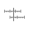
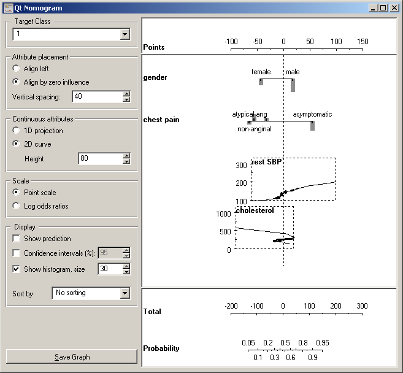
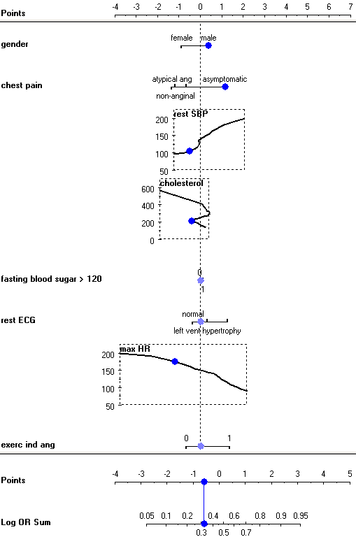
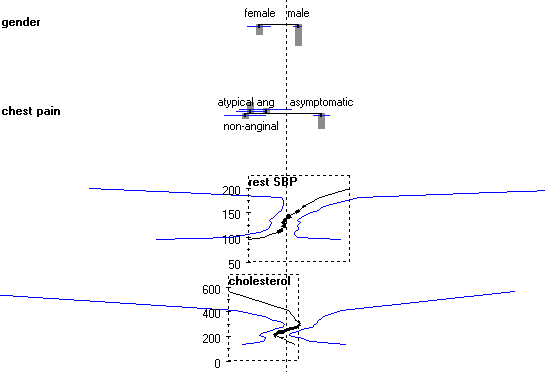

This is documentation for Orange 2.7. For the latest documentation, see Orange 3.
Nomogram¶
Nomogram
Signals¶
- Inputs:
- Classifier (orange.Classifier)
A classifier (either naive Bayesian classifier or logistic regression)
- Outputs:
- None
Description¶
Nomogram is a simple and intuitive, yet useful and powerful representation of linear models, such as logistic regression and naive Bayesian classifier. In statistical terms, the nomogram plots log odds ratios for each value of each attribute. We shall describe its basic properties here, though we recommend reading the paper in which we introduced the nomograms for naive Bayesian classifier, Nomograms for Visualization of Naive Bayesian Classifier. This description will show the nomogram for a naive Bayesian classifier; nomograms for other types of classifiers are similar, though they lack some functionality due to inherent limitations of these models.
The snapshot below shows a naive Bayesian nomogram for the heart disease data. The first attribute, gender, has two values, where log odds ratio for females is -1 (as read from the axis on the top) and for males it is around 0.4. For the next attribute, the type of chest pain, the asymptotic pain votes for the target class (having narrowed vessels), and the other three have negative odds of different magnitudes. Note that these are odds for naive Bayesian classifier, where, unlike in logistic regression, there is no “base value” which would have a odds ratio of zero.
The third attribute, SBP at rest, is continuous. To get log odds ratios for a particular value of the attribute, find the value (say 175) of the vertical axis to the left of the curve corresponding to the attribute. Then imagine a line to the left, at the point where it hits the curve, turn upwards and read the number on the top scale. The SBP of 175 has log odds ration of approximately 1 (0.93, to be precise). The curve thus shows a mapping from attribute values on the left to log odds at the top.
Nomogram is a great data exploration tool. Lengths of the lines correspond to spans of odds ratios, suggesting importance of attributes. It also shows impacts of individual values; being female is good and being male is bad (w.r.t. this disease, at least); besides, being female is much more beneficial than being male is harmful. Gender is, however, a much less important attribute than the maximal heart rate (HR) with log odds from -3.5 to +2.2. SBP’s from 125 to 140 are equivalent, that is, have the same odds ratios...
Nomograms can also be used for making probabilistic prediction. A sum of log odds ratios for a male with asymptomatic chest pain, a rest SBP of 100, cholesterol 200 and maximal heart rate 175 is 0.38 + 1.16 + -0.51 + -0.4 = -0.58, which corresponds to a probability 32 % for having the disease. To use the widget for classification, check Show predictions. The widget then shows a blue dots on attribute axes, which can be dragged around - or left at the zero-line if the corresponding value is unknown. The axes at the bottom then show a mapping from the sum of log odds to probabilities.
Now for the settings. Option Target Class defines the target class, Attribute values to the right of the zero line represent arguments for that class and values to the left are arguments against it.
Log odds for naive Bayesian classifier are computed so that all values can have non-zero log odds. The nomogram is drawn as shown above, if alignment is set to Align by zero influence. If set to Align left, all attribute axes are left-aligned. Logistic regression compares the base value with other attribute values, so the base value always has log odds ratio of 0, and the attribute axes are always aligned to the left.
The influence of continuous attribute can be shown as two dimensional curves (2D curve) or with the values projected onto a single line (1D projection). The latter make the nomogram smaller, but can be unreadable if the log odds are not monotonous. In our sample, the nomogram would look OK for the heart rate and SBP, but not for cholesterol.
The widget can show either log odds ratios (Log odds ratios), as above, or “points” (Point scale). In the latter case, log OR are simply scaled to the interval -100 to 100 for easier (manual) calculation, for instance, if one wishes to print out the nomogram and use it on the paper.
Show prediction puts a blue dot at each attribute which we can drag to the corresponding value. The widget sums the log odds ratios and shows the probability of the target class on the bottom axes. Confidence intervals adds confidence intervals for the individual log ratios and for probability prediction. Show histogram adds a bar whose height represents the relative number of examples for each value of discrete attribute, while for continuous attributes the curve is thickened where the number of examples is higher.
For instance, for gender the number of males is about twice as big than the number of females, and the confidence interval for the log OR is correspondingly smaller. The histograms and confidence intervals also explain the strange finding that extreme cholesterol level (600) is healthy, healthier than 200, while really low cholesterol (50) is almost as bad as levels around 300. The big majority of patients have cholesterol between 200 and 300; what happens outside this interval may be a random effect, which is also suggested by the very wide confidence intervals.